Герои среди нас
Афганская война
Первая Чеченская война
Вторая Чеченская война
СВО
Афганская война(1979-1989)
Афганская война – военный конфликт на территории Демократической Республики Афганистан (ДРА). В этом конфликте принимал участие ограниченный контингент советских войск.Конфликт проходил между правительственными войсками Афганистана и вооруженными формированиями афганских моджахедов, которые поддерживались НАТО, и в первую очередь США, которые активно вооружали врагов афганского режима.
Предпосылки Афганской войны
Сама война, длившаяся с 1979 по 1989 год, в историографии определяется присутствием на территории Афганистана ограниченного контингента Вооруженных сил СССР. Но началом всего конфликта надо считать 1973 год, когда в Афганистане был свергнут король Захир-шах. Власть перешла к режиму Мухаммеда Дауда, а в 1978 году произошла Саурская (Апрельская) революция, и новой властью стала Народно-демократическая партия Афганистана (НДПА), провозгласившая Демократическую Республику Афганистан. Афганистан начал строить социализм, но все строительство шло в крайне нестабильной внутренней обстановке.
Руководителем НДПА являлся Нур Мохаммад Тараки. Его реформы были крайне непопулярными в стране, где традиционно большинство составляли сельские жители. Всякое инакомыслие жестоко подавлялось. За время своего правления он арестовал тысячи людей, часть из которых были казнены.
Главным оппонентом социалистического правительства стали радикальные исламисты, объявившие ему священную войну (джихад). Были организованы отряды моджахедов, которые в дальнейшем стали главной противоборствующей силой – с ней и сражалась Советская армия.
Большинство населения Афганистана было неграмотным, и для исламистских агитаторов было несложно настраивать население против новой власти.
Начало войны
Сразу после прихода к власти правительство столкнулось с начавшимися вооруженными мятежами, организуемыми исламистами. Справиться с создавшейся ситуацией афганское руководство не смогло и обратилось за помощью к Москве.
Вопрос о помощи Афганистану был рассмотрен в Кремле 19 марта 1979 года. Леонид Брежнев и другие члены Политбюро выступили против вооруженного вмешательства. Но со временем ситуация у границ СССР ухудшалась, и мнение кардинально изменилось.
12 декабря 1979 года было принято постановление ЦК КПСС о вводе советских войск в Афганистан. Формально причиной стали неоднократные просьбы руководства Афганистана, а фактически эти действия должны были предотвратить угрозы иностранного военного вмешательства.
Необходимо помнить, что, помимо напряженных отношений с моджахедами, и в самом правительстве не было единства. Особо непримиримой стала внутрипартийная борьба, которая достигла своего апогея в сентябре 1979 года. Именно тогда лидер НДПА Нур Мохаммад Тараки был арестован и убит Хафизуллой Амином. Амин занял место Тараки и, продолжая бороться против исламистов, усилил репрессии и внутри правящей партии.
По данным советской разведки, Амин пытался договориться с Пакистаном и Китаем, что нашими специалистами считалось недопустимым. 27 декабря 1979 года отряд советских спецназовцев захватил президентский дворец, Амин и его сыновья были убиты. Новым лидером страны стал Бабрак Кармаль.
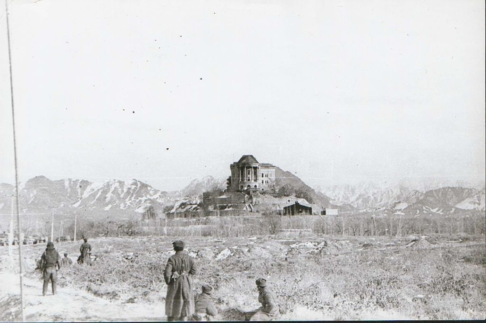
Ход войны
В результате наши солдаты оказались втянутыми в начавшуюся гражданскую войну и стали ее активными участниками.
Всю войну можно разделить на несколько этапов:
1-й этап: декабрь 1979 – февраль 1980 года. Введение в Афганистан 40-й советской армии генерала Бориса Громова, размещение по гарнизонам, организация охраны стратегических объектов и мест дислокации.
2-й этап: март 1980 – апрель 1985 года. Проведение активных широкомасштабных боевых действий. Реорганизация и укрепление вооруженных сил ДРА.
3-й этап: май 1985 – декабрь 1986 года. Сокращение активных боевых действий и переход к поддержке действий афганских правительственных войск. Помощь оказывалась авиацией и саперными подразделениями. Организация противодействия доставке оружия и боеприпасов из-за рубежа. Были выведены на Родину шесть полков.
4-й этап: январь 1987 – февраль 1989 года. Помощь афганскому руководству в проведении политики национального примирения. Продолжение поддержки боевых действий, проводимых правительственными войсками. Подготовка к выводу советских войск.
В апреле 1988 года в Швейцарии между Афганистаном и Пакистаном было подписано соглашение об урегулировании ситуации вокруг ДРА. Советский Союз обязался вывести свои войска в течение девяти месяцев, а США и Пакистан должны были перестать поддерживать моджахедов. В апреле 1988 года, в соответствии с договором, советские войска были полностью выведены из Афганистана.
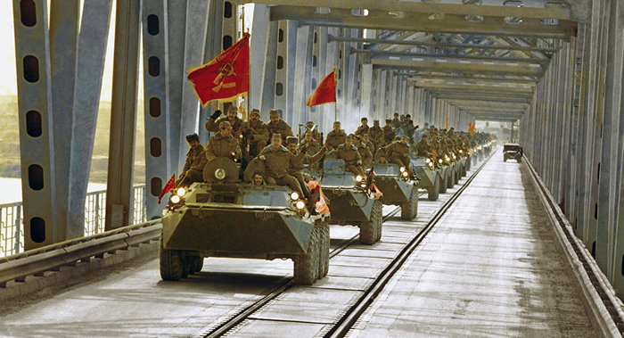
Потери в Афганской войне
На сегодняшний момент известно, что потери Советской армии составили 14 тысяч 427 человек, КГБ – 576 человек, МВД – 28 человек (погибшими и пропавшими без вести). Раненых и контуженных за время боевых действий было 53 тысячи человек.
Точные данные о погибших в войне афганцев неизвестны. По разным источникам, эти потери могли составить от 1 до 2 миллионов человек. От 850 тысяч до полутора миллионов человек стали беженцами и осели в основном в Пакистане и Иране.
После окончания войны
В Женевских переговорах моджахеды не принимали участия и не поддержали эти решения. В результате после вывода советских войск боевые действия не прекратились, а даже усилились.
Новый руководитель Афганистана Наджибулла без советской помощи едва сдерживал натиск моджахедов. Произошел раскол в его правительстве, многие его сподвижники перешли в ряды оппозиции. В марте 1992 года от Наджибуллы отошел генерал Дустум и его узбекская милиция. В апреле моджахеды захватили Кабул. Наджибулла длительное время скрывался в здании миссии ООН, но был схвачен талибами и повешен.
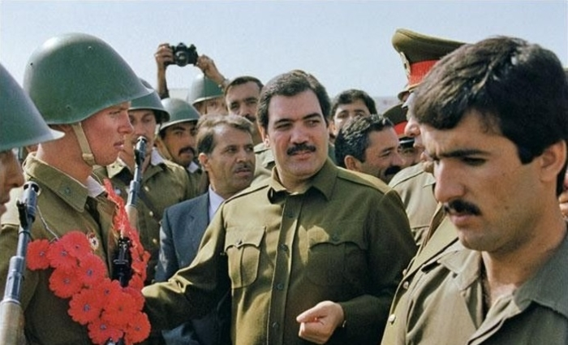
Противодействие Советскому Союзу со стороны США
Большую помощь в поддержке контрреволюции в Афганистане оказали Соединенные Штаты Америки. Именно они были инициаторами и организаторами многих международных протестов против Советского Союза.
Еще в 1980 году была организована Исламская конференция, на которой 34 министра иностранных дел требовали немедленного вывода советских войск из Афганистана. С подачи США Генеральная Ассамблея ООН приняла резолюцию с протестом против советского вмешательства. Американский президент Д. Картер выступил за бойкот московской Олимпиады 1980 года.
США и арабские монархии Персидского залива организовали беспрецедентную помощь афганским боевикам. На их деньги моджахедов готовили в Пакистане и Китае. Активно участвовало в проведении операций против советских сил ЦРУ.
В течение всего периода боевых действий США поставляли моджахедам самое разное современное оружие (безоткатные орудия, зенитные ракеты «Стингер» и другое).
Источник
Первая Чеченская война(1994-1996)
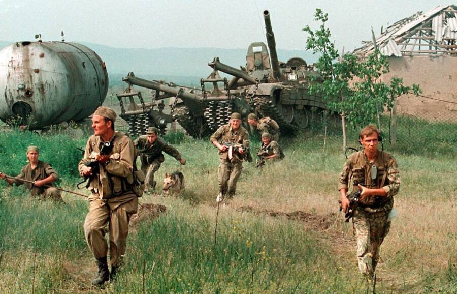
Россия вела многочисленные войны против захватчиков, были войны как обязательства перед союзниками, но, к сожалению, были войны, причины которых связаны с безграмотной деятельностью руководителей страны.
История возникновения конфликта
Все начиналось довольно мирно еще при Михаиле Горбачёве, который, объявляя о начале перестройки, на самом деле открывал дорогу развалу огромной страны. Именно в это время СССР, активно терявший своих внешнеполитических союзников, получил проблемы и внутри государства. В первую очередь эти проблемы были связаны с пробуждением этнического национализма. Наиболее ярко они проявились на территориях Прибалтики и Кавказа.
Уже в конце 1990 года был созван Общенациональный конгресс чеченского народа. Его возглавил Джохар Дудаев, генерал-майор Советской Армии. Целью конгресса стал выход из состава СССР и создание независимой Чеченской республики. Постепенно это решение начало воплощаться в жизнь.
Еще летом 1991 года в Чечне наблюдалось двоевластие: там продолжало работать правительство самой Чечено-Ингушской АССР и правительство Чеченской Республики Ичкерия Джохара Дудаева. Но в сентябре 1991 года, после неудачных действий ГКЧП, чеченские сепаратисты почувствовали, что наступил благоприятный момент, и вооруженная гвардия Дудаева захватила телецентр, Верховный Совет и Дом радио. Фактически произошел государственный переворот.
Власть перешла в руки сепаратистов, и уже 27 октября в республике прошли парламентские и президентские выборы. Вся власть была сосредоточена в руках Дудаева.
Тем не менее 7 ноября Борис Ельцин счел необходимым ввести в Чечено-Ингушской Республике чрезвычайное положение и тем самым создал причину начала кровопролитной войны. Обострением ситуации стало и то, что в республике было большое количество советского оружия, которое не успели вывезти.
Какое-то время ситуация в республике сдерживалась. Была создана оппозиция, выступающая против Дудаева, но силы были неравными.
У правительства Ельцина в это время не было ни сил, ни политической воли принять какие-либо эффективные меры, и, по сути, Чечня в период с 1991 по 1994 год стала практически независимой от России. В ней сформировались свои органы власти, своя государственная символика. Однако в 1994 году администрация Ельцина решила навести конституционный порядок в Чечне. На ее территорию были введены российские войска, что послужило началом полномасштабной войны.
Ход боевых действий
|
1 декабря 1994 г. |
Удар федеральной авиации по аэродромам Чечни. Уничтожение авиации боевиков |
|
11 декабря 1994 г. |
Вступление федеральных войск на территорию Чечни |
|
12 декабря 1994 г. |
Федеральные войска подошли к Грозному |
|
31 декабря 1994 г. |
Начало штурма Грозного |
|
19 января 1995 г. |
Захват президентского дворца |
|
3 февраля 1995 г. |
Создание группировки «Юг» и полная блокада Грозного |
|
13 февраля 1995 г. |
Заключение временного перемирия |
|
20 февраля 1995 г. |
Несмотря на перемирие, продолжаются уличные бои. Отряды боевиков отходят из города |
|
6 марта 1995 г. |
Освобожден последний район Грозного. Сформирована пророссийская администрация Чечни во главе с С. Хаджиевым и У. Автурхановым |
|
15–23 марта 1995 г. |
Взятие Аргуна |
|
30–31 марта 1995 г. |
Взяты Шали и Гудермес |
|
7–8 апреля 1995 г. |
Бои возле села Семашки |
|
Апрель 1995 г. |
Завершение боев в равнинной Чечне |
|
Май 1995 г. |
Начало боевых действий в горной Чечне |
|
3 июня 1995 г. |
Взятие Ведено |
|
12 июня 1995 г. |
Взяты райцентры Шатой и Ножай-Юрт |
|
14 июня 1995 г. |
Террористический акт в Будённовске |
|
19–22 июня 1995 г. |
Первый раунд переговоров. Мораторий на боевые действия на неопределенный срок |
|
27–30 июня 1995 г. |
Второй раунд переговоров. Договоренность обмена пленных «всех на всех», разоружение отрядов ЧРИ, вывод федеральных войск, проведение свободных выборов |
|
21 августа 1995 г. |
Боевики захватывают Аргун, но после боя выбиты федеральными войсками |
|
10–12 декабря 1995 г. |
Гудермес захвачен боевиками и через неделю зачищен федеральными войсками |
|
14–17 декабря 1995 г. |
В Чечне прошли выборы. Победил Доку Завгаев |
|
9 января 1996 г. |
Террористический акт в Кизляре |
|
6–8 марта 1996 г. |
Нападение боевиков на Грозный |
|
21 апреля 1996 г. |
Ликвидация Джохара Дудаева |
|
27–28 мая 1995 г. |
Встреча в Москве с З. Яндарбиевым. Договоренность о перемирии и обмен пленными |
|
9 июля 1996 г. |
После федерального ультиматума возобновились удары по базам боевиков |
|
6–22 августа 1996 г. |
Операция «Джихад». Нападение сепаратистов на Грозный, штурм и захват Гудермеса |
|
31 августа 1996 г. |
Хасавюртовские соглашения. Федеральные войска выводились из Чечни, а статус республики откладывался до 31 декабря 2001 года |
Итоги войны
Чеченские сепаратисты восприняли Хасавюртовские соглашения как победу. Федеральные войска были вынуждены покинуть Чечню. Все властные полномочия так и остались в руках самопровозглашенной республики Ичкерия. Вместо Джохара Дудаева власть принял Аслан Масхадов, который мало чем отличался от своего предшественника, но обладал меньшим авторитетом и был вынужден постоянно идти на компромиссы с боевиками.
Закончившаяся война оставила после себя разрушенную экономику. Города и села не восстанавливались. В результате войны и этнических чисток Чечню покинули все представители других национальностей.
Критически изменилась внутренняя социальная обстановка. Тот, кто раньше боролся за независимость, скатился до криминальных разборок. Герои республики превратились в обычных бандитов. Промышляли они не только в Чечне, но и на территории всей России. Особо прибыльным делом стало похищение людей. Соседние регионы особенно почувствовали это.
Источник
Вторая Чеченская война(1999-2009)
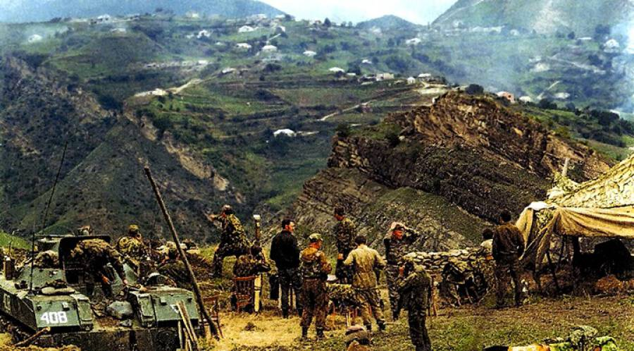
«Вторая чеченская война» – так называют контртеррористическую операцию на Северном Кавказе. По сути, она стала продолжением Первой чеченской войны 1994–1996 годов.
Причины войны
Первая чеченская война, завершившаяся Хасавюртовскими соглашениями, не принесла заметных улучшений на территорию Чечни. Период 1996–1999 годов в непризнанной республике вообще характеризуется глубокой криминализацией всей жизни. Федеральное правительство неоднократно обращалось к президенту Чечни А. Масхадову с предложением оказать помощь в борьбе с организованной преступностью, но понимания не находило.
Еще одним фактором, влияющим на обстановку в регионе, стало популярное религиозно-политическое течение – ваххабизм. Сторонники ваххабизма стали устанавливать власть ислама в аулах – со стычками и стрельбой. По сути, в 1998 году велась вялотекущая гражданская война, в которой участвовали сотни бойцов. Это течение в республике не поддерживалось администрацией, но и особого противодействия со стороны властей не испытывало. С каждым днем обстановка все больше обострялась.
В 1999 году боевики Басаева и Хаттаба попытались провести военную операцию в Дагестане, что и послужило основным поводом для начала новой войны. В то же самое время были проведены теракты в Буйнакске, Москве и Волгодонске.
Ход боевых действий
1999 год
|
7 августа |
Вторжение боевиков в Дагестан |
|
4–16 августа |
Теракты в Буйнакске, Москве, Волгодонске |
|
18 августа |
Блокирование границ с Чечней |
|
23 сентября |
Указ Б. Ельцина «О мерах по повышению эффективности контртеррористических операций на территории Северо-Кавказского региона Российской Федерации»
|
|
30 сентября |
Федеральные войска вошли на территорию Чечни |
|
26 декабря |
Начало штурма Грозного |
2000 год
|
6 февраля |
Завершение операции по освобождению Грозного |
2009 год
|
15 апреля |
Отмена режима контртеррористической операции в Чечне |
Планируя вторжение на территорию Дагестана, боевики надеялись на поддержку местного населения, но оно оказало им отчаянное сопротивление. Федеральные власти предложили чеченскому руководству провести совместную операцию против исламистов в Дагестане. Также было предложено ликвидировать базы незаконных формирований.
За август 1999 года чеченские бандформирования были выбиты с территории Дагестана, началось их преследование федеральными войсками уже на территории Чечни. На некоторое время установилось относительное затишье.
Правительство Масхадова на словах осудило бандитов, но на деле никаких мер не принимало. Учитывая это, президент России Борис Ельцин подписал указ «О мерах по повышению эффективности контртеррористических операций на территории Северо-Кавказского региона Российской Федерации». Этот указ был направлен на уничтожение бандформирований и баз террористов в республике. 23 сентября федеральная авиация начала бомбардировку Грозного, а уже 30 сентября войска вошли на территорию Чечни.
Следует отметить, что за годы после Первой чеченской войны подготовка федеральной армии заметно выросла, и уже в ноябре войска подошли к Грозному.
Федеральное правительство также внесло коррективы в свои действия. На сторону федеральных сил перешел муфтий Ичкерии Ахмад Кадыров, который осудил ваххабизм и выступил против Масхадова.
26 декабря 1999 года началась операция по ликвидации бандформирований в Грозном. Бои продолжались весь январь 2000 года, и только 6 февраля было объявлено о полном освобождении города.
Итоги Второй чеченской войны
Главным итогом Второй чеченской войны можно считать достигнутое относительное спокойствие в Чеченской Республике. Был положен конец криминальному разгулу, терроризировавшему население в течение десяти лет. Была ликвидирована наркоторговля и работорговля. И очень важно, что на Кавказе не удалось реализовать планы исламистов по созданию мировых центров террористических организаций.
Сегодня, в годы правления Рамзана Кадырова, практически восстановилась экономическая структура республики. Было много сделано для устранения последствий военных действий. Город Грозный стал символом возрождения республики.
Источник
Специальная военная операция на Украине(2022-н.в.)
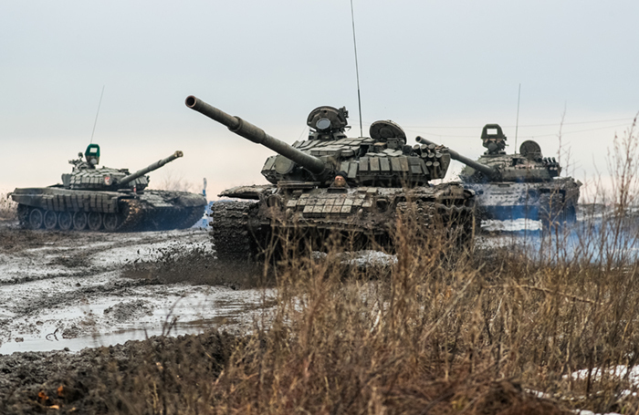
Специальная военная операция на Украине началась в четверг 24 февраля 2022 года после признания Донецкой и Луганской народных Республик. В настоящее время Вооруженные силы РФ заняли значительную часть территории Украины. При этом руководство Украины использует террористические методы ведения войны – прикрываясь мирным населением.
Основные цели операции:
- Демилитаризация Украины, то есть юридически закрепленный статус Украины как нейтрального государства, на территории которого не будут размещены ударные ракетные комплексы НАТО, направленные на Россию, а сама Украина, став нейтральной, не будет проводить линию на вступление в этот Альянс. При этом важно отметить, что Россия не ставит задачей вступление Украины в ОДКБ (по сути, аналогичный Альянс, действующий на ограниченной территории ряда республик бывшего СССР).
- Денацификация Украины, то есть предание русскому языку конституционного статуса второго государственного и, в связи с этим, отмена всех дискриминационных законов, принятых парламентом Украины в последние восемь лет (после 2014 года) в отношении русского языка и русскоязычного населения.
- Выйти на границы Донецкой и Луганской областей. До начала войсковой операции народные республики Донбасса занимали лишь часть территорий, конституционно закрепленных за Донецкой и Луганской областями.
Войсковой операции на территории Украины предшествовало предложение России США и НАТО заключить договора о взаимной безопасности, предусматривающие нераспространение НАТО на новые территории (прежде всего Украину, а также Грузию и Молдавию) и возвращение «границ НАТО» на востоке к 1997 году — то есть фактический выход из НАТО стран Прибалтики — Литвы, Латвии и Эстонии.
Данное предложение обосновано тем, что у России и Белоруссии, граничащих с этими государствами, заключен Союзный договор, а размещение ракетных комплексов и баз НАТО в непосредственной близости к границам Союзного государства резко снижает его безопасность и может влиять на независимость в связи с агрессивной колониальной по своей сути политикой США.
Что касается денацификации, то это явление более широкого характера, чем только защита прав русского населения. Она касается и вопросов противодействия разрушения православной веры, то есть нападок на Украинскую православную церковь и попытки ее раскола при создании Православной церкви Украины,
Кроме того, денацификация касается и отказа от культа, идеологии и возвеличивания неонацистских движений, организаций и политических партий, избравших своей идеологией идеи коллаборантов, активно сотрудничавших в годы Второй мировой войны с немецко-фашистскими захватчиками.
И, наконец, денацификация Украины касается отказа нынешнего руководства Украины от разрушения многочисленных памятников солдатам и офицерам Советской армии, освобождавших Украину в годы Великой Отечественной войны от немецко-фашистских захватчиков. Одним из последних таких разрушительных действий стало снесение Мемориала Славы в городе Львове, где находился прах десятков Героев Советского Союза (в том числе беспартийного и не являвшегося сотрудником НКВД Николая Кузнецова), а так же прах сотен простых советских солдат и офицеров.
Несмотря на многочисленные заявления правительства РФ и МИД России, украинские националисты, прикрываясь законом о запрете тоталитарной символики (принят 9 апреля 2015 года), продолжали варварское разрушение и циничное уничтожение памятников. И правительство, президент Украины Владимир Зеленский не остановили вандалов и неонацистов, фактически потворствуя и прикрывая их.
Почему возникла необходимость проведения войсковой операции
США и НАТО, на словах согласившись на переговоры по мерам взаимной безопасности, предложенные руководством РФ, попытались расчленить их и затянуть сам переговорный процесс. Руководство Украины прямо заявило о нежелании принимать аргументы России и в очередной раз обратилось к НАТО и США с просьбой принять их в Альянс. Более того, выступая в середине февраля на Мюнхенской конференции по безопасности президент Украины Владимир Зеленский прямо заявил, что в случае отказа от вступления в Альянс, Украина готова приступить к созданию ядерного оружия.
Совершенно очевидно, что Украина, являющаяся одним из самых крупных должников МВФ и других кредитных международных западных организаций, фактически полностью утратила международную субъектность и является экономической и политической колонией США.
Вместе с тем, ни на какие заявления Российского руководства, МИДа России Украина, прикрываясь международной поддержкой Запада и прежде всего США, на протяжение последних восьми лет не реагировала. Постоянно, с разной периодичностью, продолжались обстрелы народных республик Донбасса. На руководство Украины, активно закрывающего оппозиционные СМИ, отправляющего под арест оппозиционных политиков и вводящих санкции в отношении собственных граждан, не действуют ни международное право, ни разумные доводы политического характера, ни моральные и этические нормы, предусматривающие, например, бережное отношение к памяти погибших участников битв за освобождение Украины от немецко-фашистских захватчиков.
На основании изложенных фактов и аргументов (хотя их несколько больше, чем здесь перечислено), российское руководство приняло решение провести войсковую операцию на территории Украины, фактически принуждая руководство Украины к проведению демилитаризации и денацификации страны.
Первое, войсковая операция позволит освободить Донбасс в пределах его конституционных границ и позволит восстановить уникальный единый промышленно-экономический комплекс.
Второе, в результате военных действий, которые предпринимает Россия, предполагается заставить руководство Украины принять нейтральный статус, провести в стране денацификацию и отказаться от дальнейшего курса на русофобию и уничтожение памятников общей российско-украинской истории и культуры.
С этой целью Российская Федерация проводит войсковую операцию практически по всему периметру российско-украинской и украинско-белорусской границ. В настоящий момент ВС РФ заняли значительную часть Донбасса и частично Северную, Восточную и Центральную части Украины. При этом российское руководство подчеркивает, что не имеет планов, по достижении указанных целей, проводить оккупацию Украины.
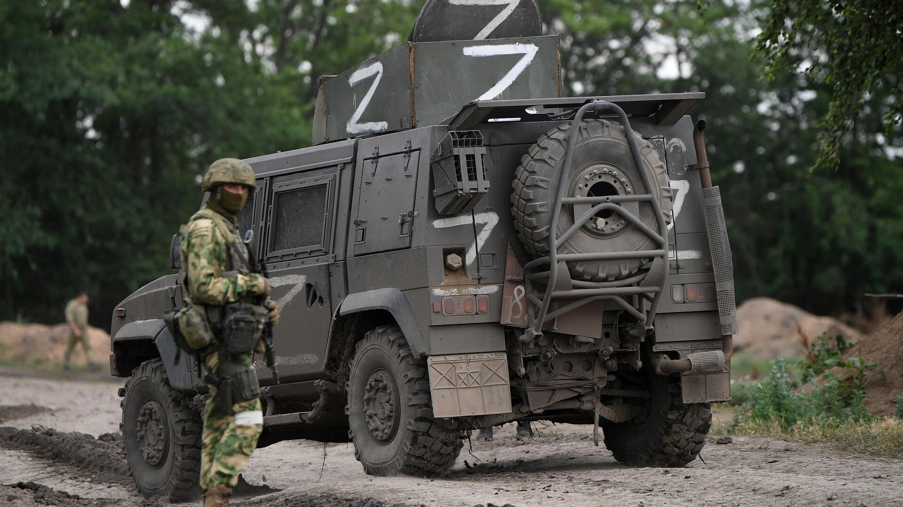
Особенности войсковой операции
Задача воинской операции на Украине: отрезать донбасскую группировку от баз снабжения. После чего принудить ее к сдаче или подвергнуть полному уничтожению.
Между тем, сложность оперативной обстановки заключается в том, что значительная часть военнослужащих Вооруженных сил Украины (ВСУ) постепенно сосредотачивается в крупных городах, там же размещаются крупнокалиберные артиллерийские орудия и установки залпового огня типа «Град». Это делается с той целью, чтобы, с одной стороны затруднить их нейтрализацию и уничтожение, прикрываясь мирным населением городов, а, с другой, чтобы после проведения операций по их ликвидации обвинить Российскую армию в вооруженных действиях в черте городов, где проживает мирное население.
Российская армия во избежание обвинений в уничтожении мирного гражданского населения в настоящий момент воздерживается от боев в городах, ограничиваясь боевыми действиями в пригородах и на дальних подступах к ним.
Командование Российской армии распорядилось оставить коридоры для выхода гражданского населения из зоны боевых действий. По разным причинам, в том числе сокрытию от населения информации о наличии таких коридоров и прямому вооруженному препятствованию гражданам, желающим покинуть города, выход мирных граждан из зоны боевых действий почти не производится.
Мирные переговоры
На протяжении всего времени войсковой операции и мировым сообществом, и участниками конфликта обсуждается возможность мирного разрешения конфликта, которого можно достичь в результате переговоров. Первым о необходимости таких переговоров заговорил Владимир Зеленский, являющийся легитимным президентом страны.
Однако в настоящий момент переговоры зашли в тупик.
Российская сторона настаивает на:
- Признании и освобождении территории Донецкой и Луганской республик в пределах их конституционных границ (границ, которые записаны в Конституции Украины).
- Денацификации Украины.
- Принятии на конституционном уровне (внесения на экстренной сессии Верховной рады) нейтрального статуса Украины.
Украинское правительство требует полного прекращения военных действий и вывода российских войск с территории Украины. И только после этого предполагает обсуждения остальных пунктов российских предложений.
Данное требование украинской стороны невыполнимо, поскольку РФ не может выводить войска из территории Украины, так как в предыдущие годы Украина неоднократно обманывала РФ. В частности, в сходных условиях были заключены Минские соглашения (осень 2014 и февраль 2015 года), однако после остановки боевых действий Минские соглашения ни по одному пункту не были выполнены.
Источник
Герои школы 24
Липатов Вячеслав Юрьевич
Дёмышев Сергей Евгеньевич
Заздравных Александр Викторович
Мальгин Александр Борисович
Плясунов Руслан Анварович
Афганская война
Липатов Вячеслав Юрьевич
Год рождения: 24 мая 1960
Место рождения: г. Березники
Должность: Мл. сержант в/ч 83260
Дата гибели: 15 апреля 1981 г.
С 1967 по 1977 год Вячеслав Липатов учился в школе №24 города Березники. Среди своих сверстников он выделялся целеустремлённостью.
В школьные годы Слава серьёзно занимался спортивной гимнастикой, имел разряд кандидата в мастера спорта. Являлся чемпионом области.
Тренеры гарантировали Вячеславу блестящую спортивную карьеру. Он побеждал на областных и всесоюзных соревнованиях.
Заниматься гимнастикой он решил во 2 классе. По словам тренеров, Слава Липатов был спокойным и целеустремлённым, он сильно выделялся на фоне остальных, его все уважали.
Он участвовал во всех школьных делах несмотря на то, что у него было мало свободного времени. Он легко совмещал хорошую учёбу в нашей школе и занятия по гимнастике. Сначала он был невысокого роста и щуплый, но к выпускному классу он вытянулся и возмужал, и выглядел старше своих сверстников.
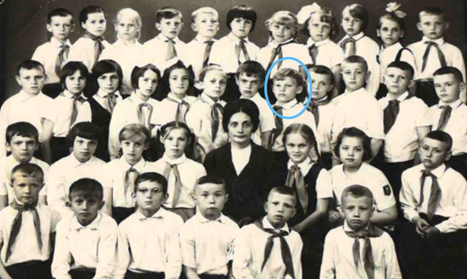
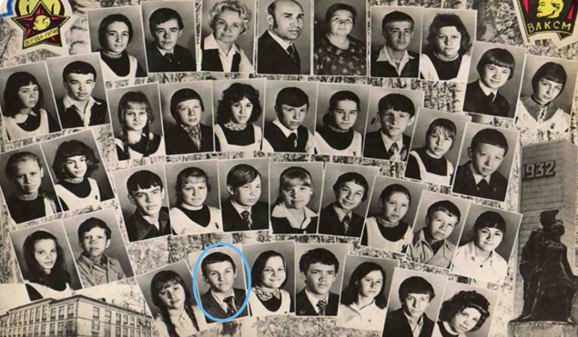
После школы Слава хотел учиться только в Ленинграде. Он влюбился в этот город ещё в детстве.
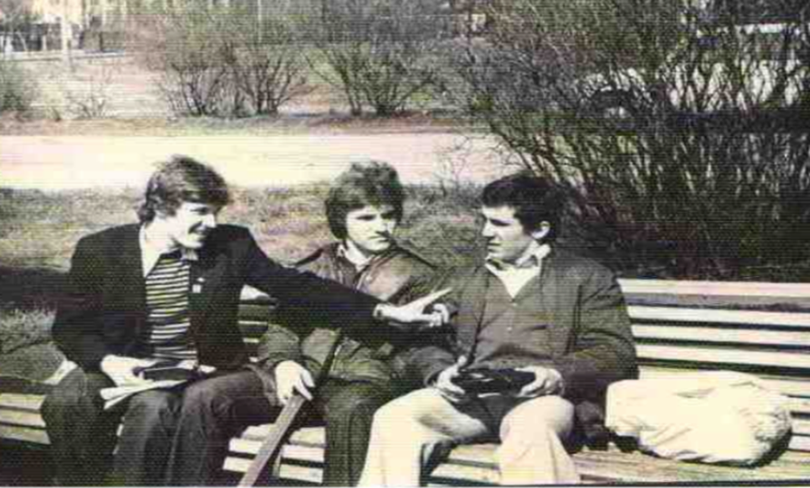
Летом 1979 года Липатов был призван в ряды Советской Армии, а в октябре 1979 года окончил школу сержантов, получил специальность разведчика глубокого тыла и был направлен в Мурманскую область в город Печенга для продолжения службы. Ему очень нравились те места. Он никогда не унывал, всегда старался поддержать родителей в своих письмах. В одном из писем он написал, что его отправляют «в командировку далеко и надолго». Речь шла об Афганистане.
В декабре 1979 года Липатов был направлен в Афганистан.
На службе, будучи командиром отделения в разведывательной роте войсковой части 01480, Вячеслав зарекомендовал себя грамотным, инициативным, исполнительным и трудолюбивым человеком. Он обучал и воспитывал подчинённых, заботился о них, держал в исправности всю технику.
В последнем своём письме от 11 апреля 1981 года Вячеслав Липатов сообщал родителям о том, что им зачитали приказ об увольнении. Его должны были уволить в мае. Перед этим им предстоял рейд 13 или 14 апреля, в котором он погиб.
15 апреля 1981 г. в составе подразделения вел бой в ущелье западного населенного пункта Анардара в провинции Фарах. Радиотелеграфист — разведчик, младший сержант, Липатов Вячеслав погиб. До своего 21 года он не дожил месяц и 9 дней (до 24 мая). За мужество и отвагу награжден орденом Красной Звезды (посмертно) и Грамотой «Воину - интернационалисту». Похоронен на родине, на Березниковском городском кладбище.
В память о нём на протяжении 40 лет в городе проходят соревнования по спортивной гимнастике. В апреле 1982 года в гимнастическом зале березниковского Дворца спорта «Темп» прошёл первый турнир. Соревнования получили статус Всероссийских.
В Березниках установлен Мемориал Победы, посвящённый погибшим березниковцам в Афганской войне. В первой строке написано имя Липатова и год его смерти.
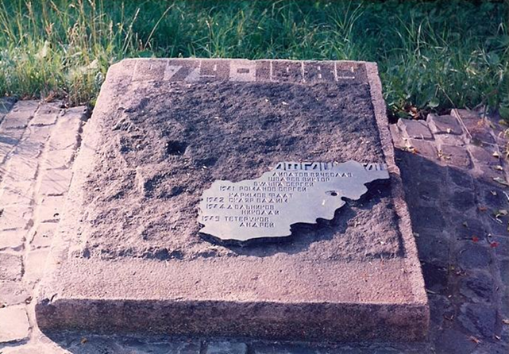
Первая Чеченская война
В 1982 году поступил в первый класс нашей школы. За время учёбы его запомнили старательным, общительным, очень доброжелательным учеником, хорошим товарищем и настоящим другом. Умел постоять за себя и защитить более слабого одноклассника. Помимо школьных занятий Серёжа занимался в центре научно – технического творчества судомодельным спортом. Участвовал в областных, российских соревнованиях. Стал кандидатом в мастера спорта по судомодельному спорту. С октября 1988 года в Доме пионеров поселка Оричи начали работать технические кружки. В кружок картинга записалось около сорока человек, в том числе и Сергей. Начинали почти с нуля: был выделен лишь угол в мастерской и один новенький карт с двигателем 175 кубиков- юниор. И вот первые крупные соревнования по инициативе райкома ДОСААФ и Дома пионеров, состоявшиеся в конце февраля. Кружковцы Дома пионеров выступили неплохо, заняв общее второе место. Победу команде принесли Иван Мариинский, Сергей Попов, Сергей Зубарев, Алексей Вылегжанин, Сергей Демышев.
Так же Сергей занимался и в клубах «Юных моряков и речников» и военно – спортивном – «Каскаде». Достиг высоких результатов в плавании, гребле, стрельбе.
В 1990 году закончил 24 школу. Сергея выпускал Горюшкин Александр Борисович, учитель русского языка и литературы, затем учитель истории. После окончания 8-го класса Сергей учился в лицее № 42.
20 июня 1994 года Сергей Демышев был призван в ряды Российской армии. Служил в отдельной дивизии особого назначения внутренних войск России. По собственному желанию стал спецназовцем. Участвовал в боевых действиях в Чечне. Был ранен. Лечился в Волгоградском военном госпитале. После излечения просится обратно к ребятам в часть.
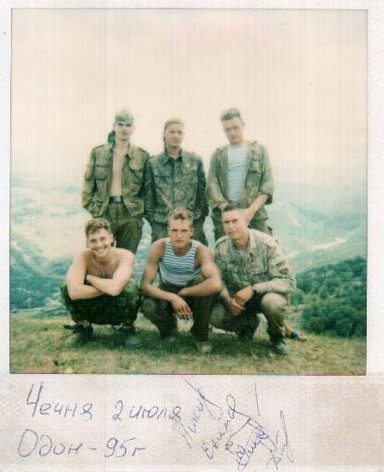
Погиб 15 декабря 1995 году в Гудермесе. Награжден «Орденом мужества» за проявление самоотверженности, мужества и отвагу при охране общественного порядка, смелые и решительные действия, совершенные при исполнении воинского долга в условиях, сопряженных с риском для жизни».
15 декабря 2016 в школе №24 состоялось открытие мемориальной доски Дёмышеву Сергею Евгеньевичу.
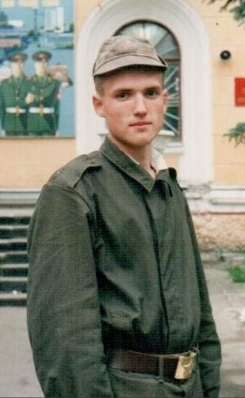 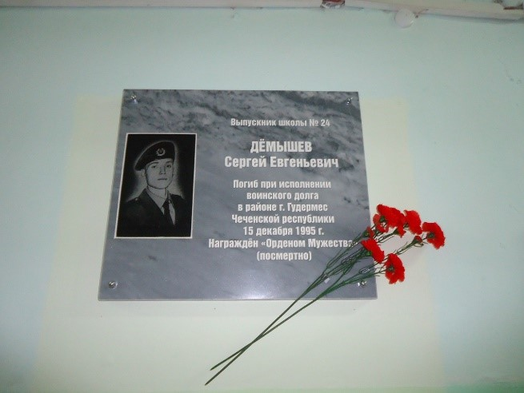
Вторая Чеченская война
Заздравных Александр Викторович
Дата рождения: 24 января 1966 г.
Место рождения: г. Березники
Дата гибели: 29 марта 2000 г.
Место гибели: населенный пункт Центорой
В мае 1994 года назначен стажером, а потом милиционером-бойцом оперативного взвода ОМОНа при УВД г. Березники. Выезжал в служебные командировки на территорию Чеченской республики, награжден медалями "За отвагу" и "За отличие в охране общественного порядка". В феврале 2000 года в составе сводного ОМОНа направлен в служебную командировку в Веденский район Чечни.
29 марта 2000 года сводный отряд сотрудников ОМОНа выехал на специальную операцию в населенный пункт Центорой. При подъезде к населенному пункту по колонне был открыт огонь из стрелкового оружия и гранатометов со стороны расположенных вдоль дороги холмов. Лейтенант милиции Заздравных Александр Викторович выдвинулся на передовую позицию и вступил в неравный бой с превосходящим по численности противником, прикрывал огнем товарищей, давая им возможность занять оборону. Получив тяжелое ранение, он продолжал вести огонь по боевикам. Погиб на месте боя.
Указом Президента Российской Федерации за мужество и героизм, проявленные при исполнении служебного долга в условиях, сопряженных с риском для жизни, награжден орденом Мужества (посмертно).
— Говорят, я похож на папу. Это хорошо, — сказал со светлой улыбкой высокий юноша в черном пальто. Игорь — сын погибшего омоновца Александра Заздравных. — Отец много работал, но для общения со мной всегда выкраивал время. Брал меня с собой на рыбалку, однажды мы поймали большую рыбу. Папа с детства увлекался пластилиновой лепкой — у него сохранилось большое ведро солдатиков, которое он мне и передал. Мы часто по вечерам с ним лепили, рисовали. Я тоже хотел стать военным. Но в армию меня не взяли — сказали, что отец за меня долг Родине уже отдал. Сейчас я работаю как когда-то и отец — на АВИСМЕ. По специальности я технолог, хочу связать жизнь с производством.
У Игоря подрастает сын Ярослав, ему два года.
— Если он захочет служить, то я не стану препятствовать, — говорит Игорь. — Мне важно, чтобы он вырос человеком. Этого же от меня хотел и мой отец.
От полученных ран на месте взрыва погибли капитан милиции, начальник штаба ОМОН при УВД г. Березники Мальгин Александр Борисович и сержант милиции, милиционер-взрывотехник ОМОН при УВД г. Березники Утеев Павел Сергеевич. В милиции работал с 27 лет. Это была его первая и последняя командировка в Чечню. Дома у него остались жена и трое детей. Александр награжден орденом Мужества(посмертно).
Специальная военная операция на Украине
Плясунов Руслан Анварович
Дата рождения: 7 февраля 2001 г.
Место рождения: г. Березники
Должность: матрос 155-ой гвардейской бригады морской пехоты.
Тихоокеанский флот
Дата гибели: 29 августа 2022 г.
Руслана с раннего детства привлекала театральная деятельность, у него была грамотно поставлена речь. Он активно принимал участие на музыкальных переменах, которые проводились в школе. Так же Руслан любил заниматься плаваньем, но он не прошел отбор в команду. Руслан был хорошим сыном и внуком. Он постоянно искал подработки, чтобы обеспечить семью. Когда у бабушки Руслана Екатерины Дмитриевны прорвало канализацию, он нашел подработку (укладывал плитку у дворца пионеров), чтобы заработать деньги и нанять мастера для починки трубы.
— «Руслан постоянно всем хотел помочь, он не любил ябедничать и доносить на других. Он был скромным философом», — рассказала тетя Руслана.
Руслана призвали в армию 8 ноября 2021 года. К тому времени Руслан закончил Строительный техникум и получил профессию сварщика. Он пошел в армию обычным ребенком, столкнулся с очень большими трудностями, но несмотря на это, выходил из всех ситуаций и никогда не жаловался. Он уехал в воинскую часть во Владивосток, служил в морской пехоте. Контракт заключил на два года. Армия и СВО закалили Руслана. Он будто стал другим человеком. Руслан преподносил все свои ранения со смехом. Он был ярким человеком, выделялся среди всех. Несмотря на все проблемы, которые легли на его плечи, Руслан никогда не унывал. Руслан нашел себя, он знал свои обязанности. Его уважали командиры, несмотря на то, что ему был всего лишь 21 год.
Во время спецоперации произошла забавная ситуация. Во время обстрела осколки дрона попали Руслану в бровь и бедро, в результате чего его отвезли в госпиталь. Его товарищи, не зная об этом, начали искать Руслана, сильно перепугались. В это время Руслан поймал какую-то танкетку после того, как его раны обработали. Его благополучно подбросили обратно, в то время как его товарищи сидели седые, не зная, что делать. Но увидев в скором времени на горизонте веселого Руслана, обрадовались. Фельдшеры сказали: «Плясунов! Ты что тут делаешь? Едь домой, сколько уже можно? Если мы тебя еще раз тут увидим, то ноги оторвем».
В апреле 2022 года у Руслана умерла мама после того как переболела коронавирусом. На похороны Руслан не успел. Но в июле приехал в Березники на две недели. Сходил на могилу мамы. Трудно представить, как он смог пережить все это.
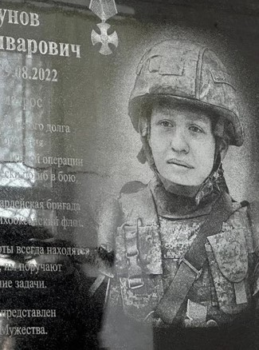
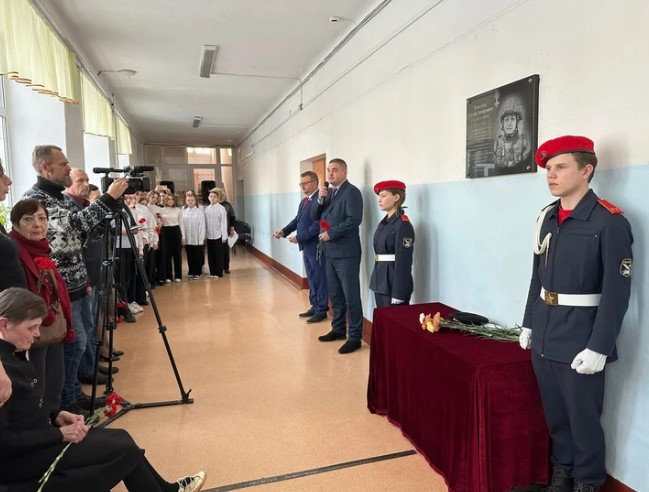
Последнее сообщение от Руслана пришло накануне его смерти поздно ночью 28 августа. «Он написал просто: «Здравствуйте», а я уже спала, отвечать стала только утром, — рассказала тетя Руслана Оксана Гайдерова. —А потом к нам домой пришли представители военкомата пришли к нам домой и сообщили страшную весть. Мы долго не решались сказать об этом бабушке: две смерти родных за один год пожилому человеку трудно пережить крайне непросто.» Погиб Руслан в день рождение своей мамы в ходе спецоперации на Украине (29 августа). Ему был 21 год. Он был посмертно награжден орденом Мужества.
Восемнадцатого ноября 2022 года в стенах 24 школы города Березники была открыта мемориальная доска Плясунову Руслану.
— Руслан всю эту войну шел с улыбкой, не унывал, что подтверждают его боевые товарищи, — повествует сестра Руслана Елена. Руслан был на хорошем счету у парней с которыми он служил, его все уважали. Один парень, с которым он шел плечом к плечу с начала войны – Антон, тяжело перенес гибель Руслана. Они были очень близки. Макс – товарищ Руслана, служивший на Камчатке, выписался из госпиталей и буквально сразу приехал на прощальную церемонию, проделав большой путь, чтобы возложить венок.